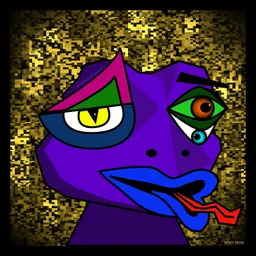

Minimalism rose in early-1960s New York as a refusal of Abstract Expressionism: serial geometry, factory materials, and art that simply occupied space. Compressionism recasts that ethic as an emerging digital art style — treating reduction as craft, constraint as catalyst, and beauty as what survives the cut.
The material is bytes, not steel, plexiglass or fluorescent tubes; the site is Bitcoin, not a gallery floor. SVG vectors fit the lineage — infinite scale without quality loss, small enough that every unit earns its place. Bitcoin's scarce space and costly permanence force the work fully on-chain. The art is not stored elsewhere. It is written into Bitcoin itself: objecthood under the constraints Bitcoin demands.
Not shrinking a picture — deciding what the object can live without, until everything left is load-bearing.
Bitcoin gives the whole world a few megabytes every ten minutes. Anything that wants to live there forever has to earn every byte.
Serial geometry, one stroke weight, no ornament. What remains after the cut is the work — and only the work.
A croaker is not a link to art somewhere else. It is a fragment of Bitcoin: bytes that the largest distributed network in the world carries forever.
There are not 3,333 croaker files on Bitcoin. There is one — 58,167 bytes holding the 24 parts, the 28 shaders, the 9 motions, the rules, and the exact generator. When you open your edition, it asks the on-chain runtime which edition it is, re-derives the entire 3,333-croaker plan from the master seed, and composes yours on the spot. Same maths, same answer, for everyone, forever.
Each of the 3,333 editions is a claim on one croaker — no artwork bytes of its own.
24 parts · 28 shaders · 9 motions · the rules · the generator. Everything, once.
The only outside call the file makes is to another on-chain asset. No server decides anything.
Backgrounds, faces, motions, the Crown — recomputed from one seed with the exact generator. Bit-for-bit the same on every machine.
One shader, one head, two eyes, one mouth, one motion — assembled into a self-contained piece in your browser.

Identical for every viewer, on every device, for as long as Bitcoin exists.
This croaker was not downloaded. The page holds the same generator and the same compressed parts as the file on Bitcoin, and it just re-derived a croaker from them — background shader running, motion playing, face composed from four of the 24 parts.
Type the four digits of your edition exactly as they appear on acme.pics — CROAKER.0330 → 0330. We render the real piece live, score every trait against all 3,333, and tell you where it stands.
Every croaker costs the same 4,200 sats, and every one is cut from the same plan — but the plan is not flat. Backgrounds come in four tiers. 594 croakers move. 1,211 react to your cursor. One wears the Crown. The odds below are the odds of any single mint.
Nine motion series on a staircase of elevens: the rarest has 22 pieces and every step after it is exactly eleven more. Serial geometry applied to scarcity, the way Minimalism stacked its units. The six family-bound series only appear on their own backgrounds; Supernova, Cyclone and Singularity roam.
22 + 33 + 44 + 55 + 66 + 77 + 88 + 99 + 110 = 594 · one block = 11 croakers
33 Legendary + 400 Rare + 1,000 Uncommon + 1,900 Common = 3,333 · every background is hand-written shader code running live · 14 of them react to hover and click
The Legendary background exists on 33 croakers. The rarest motion, Glass Matrix, exists on 22. They meet exactly once — and that single piece is the Crown. Nothing was added to make it special; the plan left one intersection standing. It costs whoever summons it 4,200 sats — like every other croaker.
The Interactive Matrix · Glass Matrix · click its glyph rain to cycle the sets · rendering live, right here
Each of a croaker's traits — background, motion, head, left eye, right eye, mouth — scores 3,333 ÷ the number of croakers that share it. The scores add up; the Crown scores an extra 3,333 for being the Crown. Higher total, rarer croaker. Every croaker is ranked #1 to #3,333 with no ties, and the numbers come straight from the on-chain plan — nothing is stored on this page.
Twelve crystal heads, four left eyes, four right eyes, four mouths: 768 possible faces, no face repeated more than eight times, and never twice on the same background. Hover steers the storms; a click sends the shockwave. The object is on Bitcoin; the behaviour is in the object.
The file that holds all 3,333 croakers is confirmed on Bitcoin and copied across the largest distributed network in the world. It is not a link to art somewhere else; it is the art, and it will re-derive every croaker for as long as Bitcoin exists.
Its bytes cannot be changed — not by us, not by a platform, not by anyone. Every face, every shader, every rule is fixed.
There is no server to unplug and no host to pressure. The art lives in the ledger itself.
No domain to renew, no gateway to rot. It lasts exactly as long as Bitcoin does.
One price, every tier. The chain decides which croaker your edition summons; the price never moves. 3,333 editions, then the cut is final.
artist: HNFT PEPE · 3,333 croakers · one file · on Bitcoin · 4,200 sats / mint